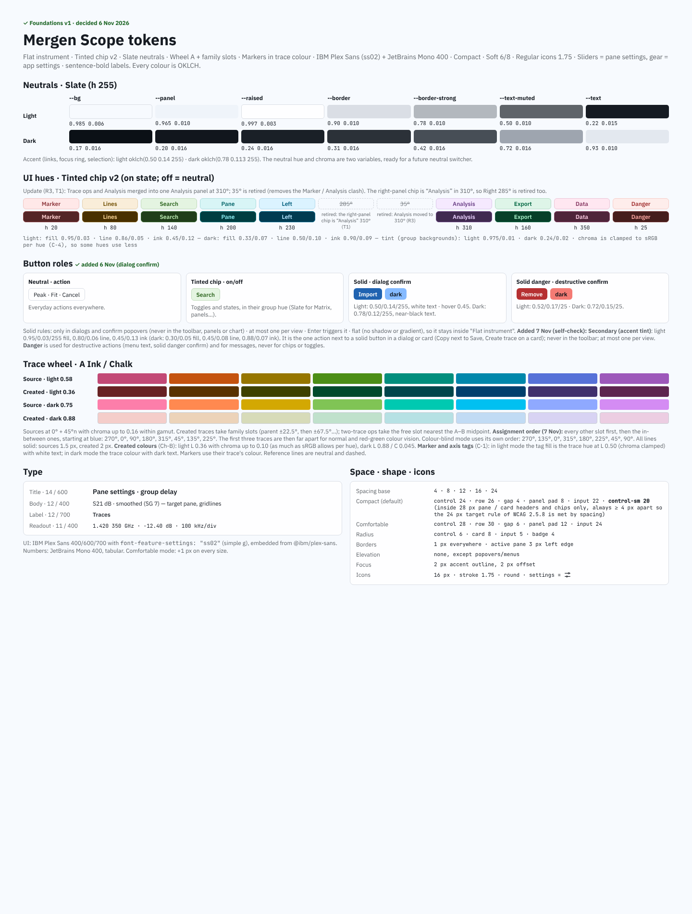
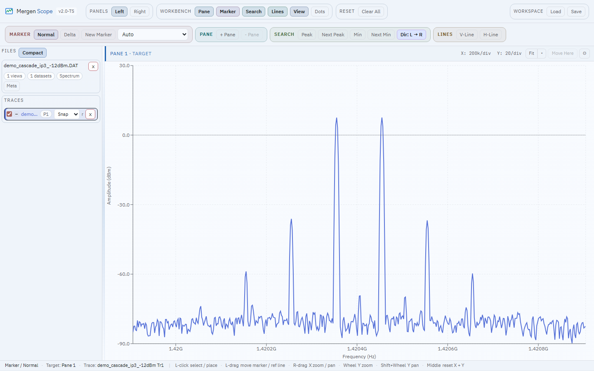
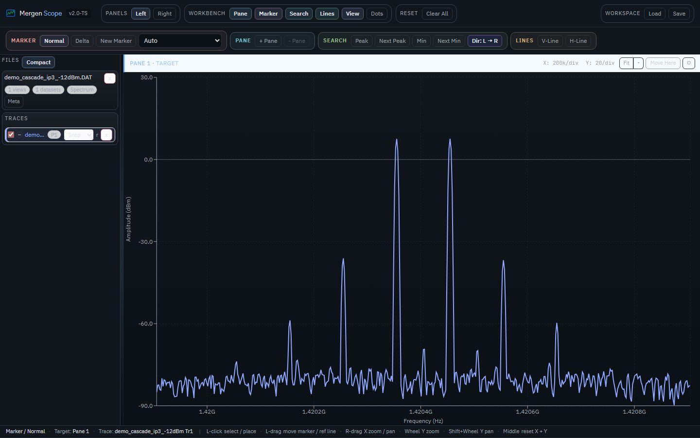
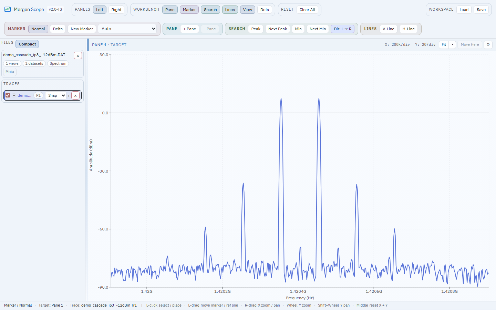
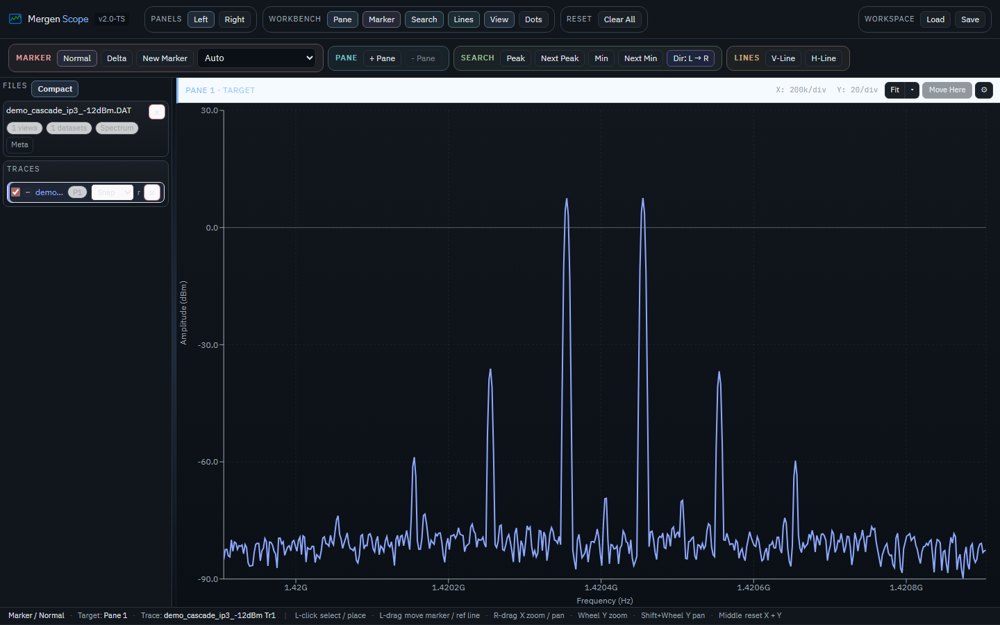
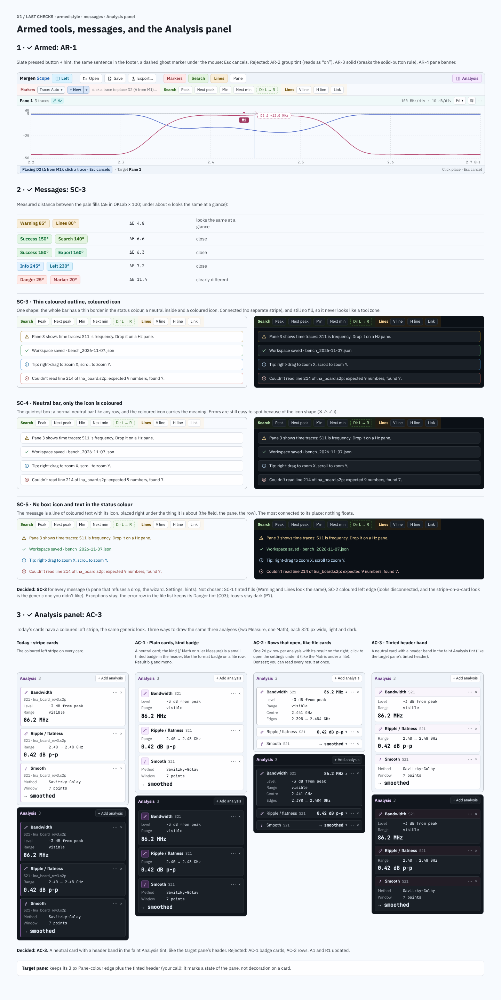
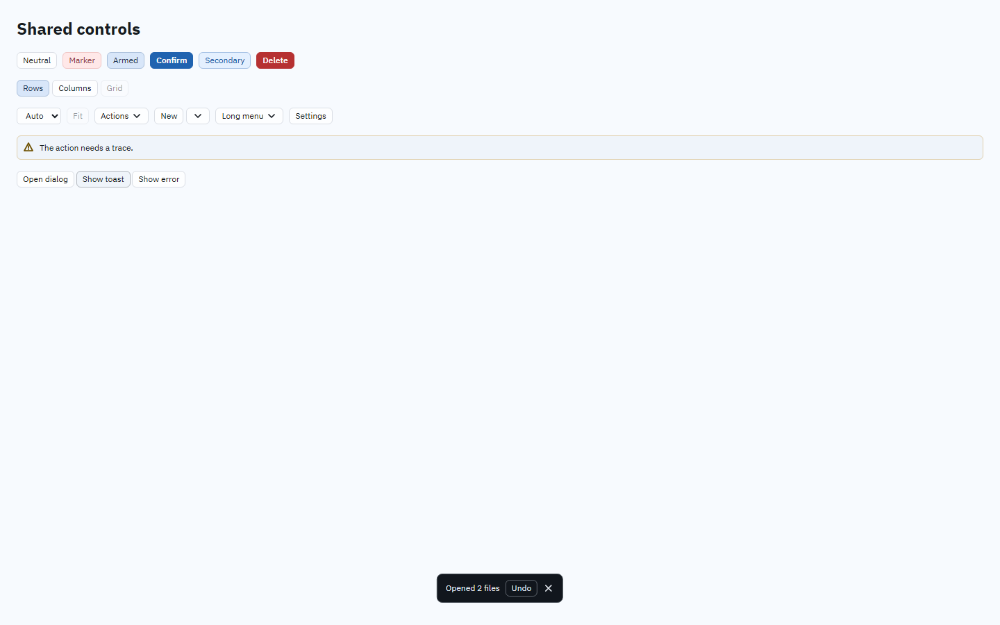
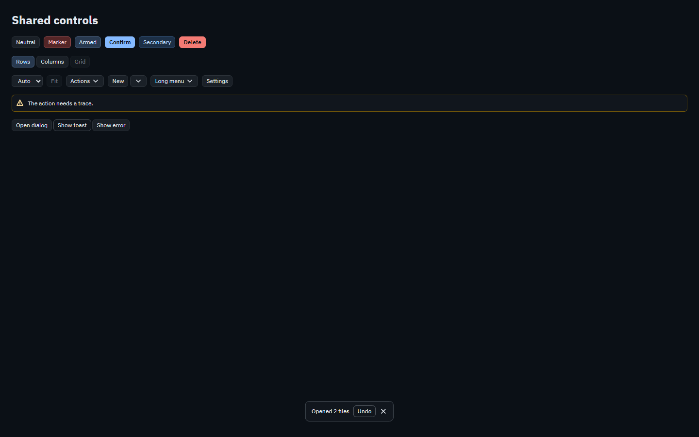

Written v3 spec wins. Read reference README and the difference register and measured colours. Source images are unchanged. Click any image for original pixels. Boards and app screenshots have different heights and state/data; this is a visual comparison, not a pixel-diff score.
Phase 1 evidence is historical; Phase 2 evidence belongs to committed checkpoint 517fb4c. Correct token definitions do not establish that legacy consumers use them. No Phase 3 implementation is included.








Additional verified dark toast capture (original retained). The preview can omit the tiny text; original and fresh PNG text-region pixels match.
All dispositions and remaining evidence requirements: difference register.